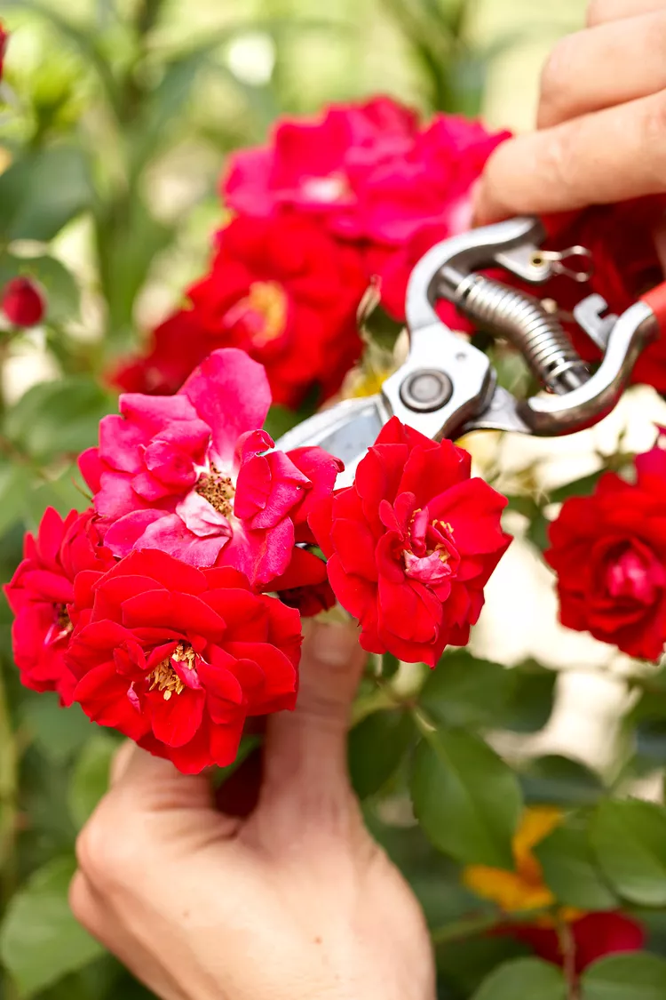

Not sure when to prune? Prune spring-flowering shrubs, such as lilacs, and large-flower climbing roses, immediately after the blooms fade. They set their flower buds in autumn on last year's growth. If you prune them in fall or winter, you remove next spring's flower buds.
Apply only composted, rotted manure that has cured for at least six months to your soil. Fresh manure is too high in nitrogen and can "burn" plants; it may also contain pathogens or parasites. Manure from pigs, dogs, and cats should never be used in gardens or compost piles because they may contain parasites that can infect humans.
All rights reserved to Daniel Ben Shabtay